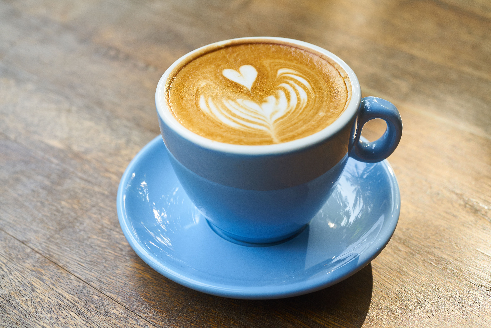
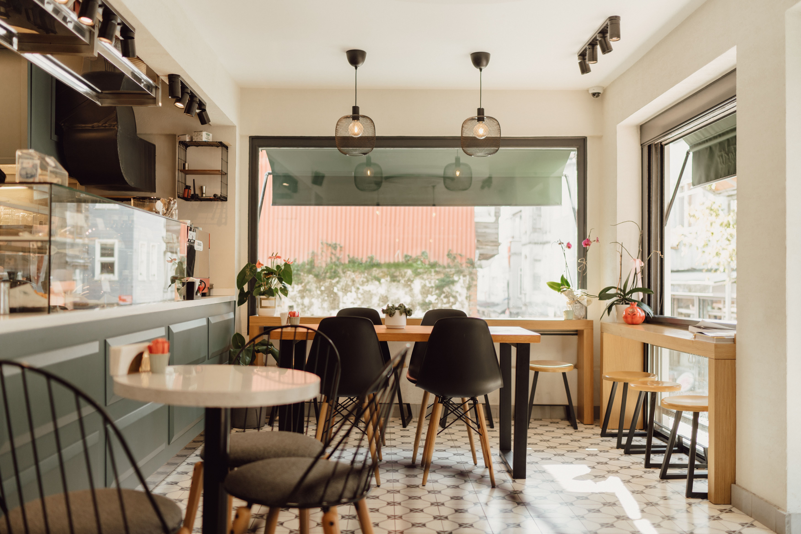
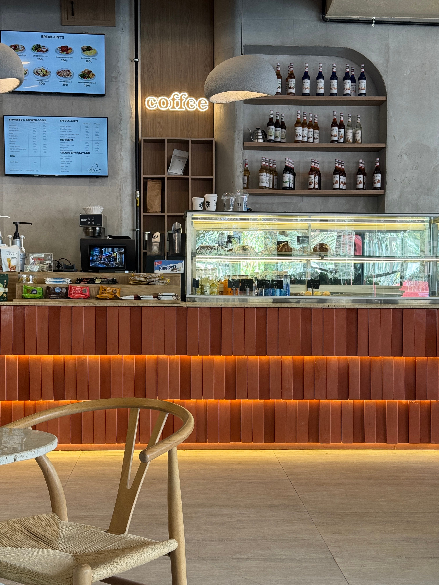
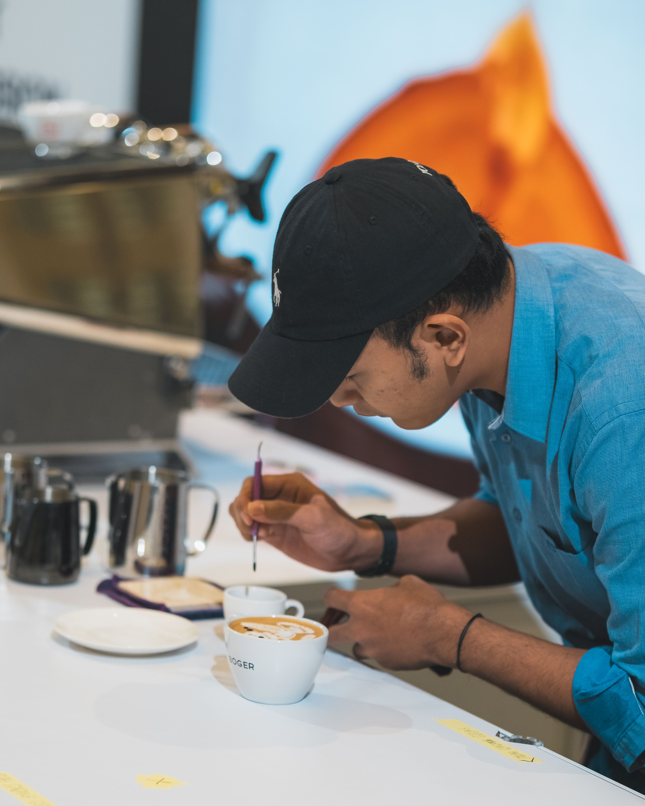
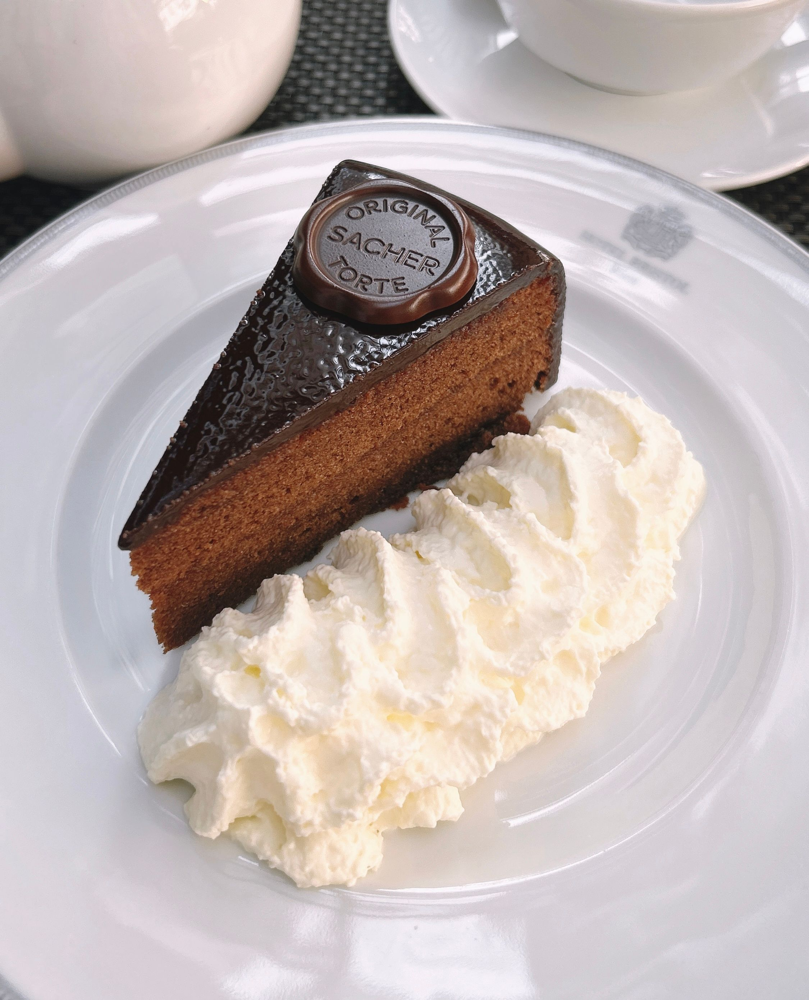

Cappuccino
Doppelter Espresso, seidig geschäumte Milch, ein Hauch Kakao.
4,20 €
Neubaugasse 12 · 1070 Wien
Melange am Marmortisch, frische Mehlspeisen aus der eigenen Backstube und ein Platz am Fenster, an dem der Vormittag ruhig vergeht.

Willkommen
Seit 2016 rösten wir in kleinen Chargen, backen jeden Morgen selbst und servieren den Kaffee so, wie er in Wien seit jeher dazugehört: in Ruhe, mit einem Glas Wasser und ohne Eile. Wer hereinkommt, darf bleiben – ob für die schnelle Melange oder den langen Nachmittag mit Buch.
Unser Haus
Der Gastraum verbindet altes Wien mit klaren Linien: geölte Eichentische, Messingdetails und eine offene Theke, an der man dem Handwerk zusehen kann. Die Vitrine wird über den Tag hinweg immer wieder neu bestückt – was ausgeht, geht aus.
Im hinteren Teil finden sich ruhige Nischen für zwei, vorne am Fenster die großen Tische für alle, die gerne gemeinsam frühstücken.

Handwerk
Unsere Baristi ziehen jeden Espresso frisch, wiegen das Mehl für die Kipferl auf das Gramm und schäumen die Milch, bis sie seidig glänzt. Der Unterschied liegt nicht im Geheimnis, sondern in der Sorgfalt – und in der Zeit, die wir uns dafür nehmen.
Das Team kennenlernen
Aus der Karte
Ein kleiner Vorgeschmack – die ganze Auswahl steht auf der Speisekarte.

Doppelter Espresso, seidig geschäumte Milch, ein Hauch Kakao.
4,20 €

Dicht, dunkel, wenig süß – nach einem alten Hausrezept.
5,40 €

Butterteig mit Marillenfülle aus dem Wachauer Sommer.
3,80 €
Öffnungszeiten
Kommen Sie ohne Reservierung vorbei – oder sichern Sie sich für größere Runden vorab einen Tisch.
Kontakt & Anfahrt| Montag – Freitag | 7:30 – 19:00 |
|---|---|
| Samstag | 8:00 – 18:00 |
| Sonntag | Ruhetag |